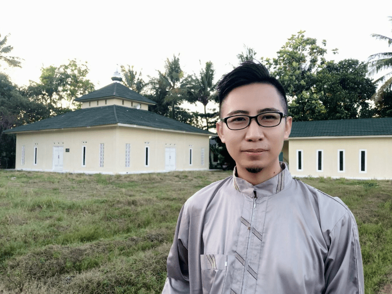

Wakaf Pembebasan Lahan Pesantren IT dan Tahfidz Madrasah Digital
Bantu kami membebaskan lahan seluas 1.800 m2 untuk pembangunan Pondok Pesantren IT dan Tahfidz Madrasah Digital di Bekasi
BERWAKAF SEKARANGDana Terkumpul Rp 43.000.000 dari Rp 360.000.000
Bismillahirrahmanirrahim,
Perkenalkan saya Kresna Galuh, praktisi IT dan founder CODEPOLITAN. Bersama dengan Komunitas Pecinta Quran, kami ingin melakukan penggalangan dana untuk melakukan pembebasan lahan untuk pembangunan pesantren IT dan Tahfidz Madrasah Digital.
Kami mengajak para orang baik untuk sama-sama patungan dan berwakaf untuk membebaskan lahan tanah dalam rangka membantu terwujudnya Pesantren IT dan Tahfidz Madrasah Digital, untuk mencetak generasi muda penghafal Al-Quran yang memiliki keahlian dalam bidang teknologi.
Latar Belakang
Selain membawa banyak manfaat bagi kehidupan, teknologi seperti pedang bermata dua, terkadang juga menciptakan banyak masalah baru. Teknologi memaksa banyak hal berubah, termasuk cara belajar, bersosialisasi, bekerja bahkan berkarya. Pada akhirnya kita tidak mungkin bisa menghindari perubahan tersebut. Mau tidak mau kita harus beradaptasi, bahkan jika perlu kitalah yang harus menentukan arah perubahan tersebut.
Oleh karena itu, dengan rencana dibangunnya Pesantren IT dan Tahfidz Madrasah Digital ini diharapkan bisa menciptakan banyak generasi muda yang tidak hanya memiliki hafalan Al-Quran dan pemahaman agama yang baik, namun juga memiliki keahlian yang mumpuni dalam bidang teknologi.
Apa itu Madrasah Digital?
Madrasah Digital merupakan proyek sosial dalam bidang pendidikan yang menggabungkan sistem pendidikan pesantren Islami dengan konsep bootcamp teknologi modern yang berfokus pada keahlian.
Proyek Madrasah Digital ini dibangun untuk menjawab permasalahan umat dalam bidang ekonomi khususnya lapangan kerja. Dengan proyek Madrasah Digital ini diharapkan akan lahir banyak generasi muda yang selain hafal Al-Qur’an sebagai pedoman hidupnya dan memiliki pemahaman yang baik tentang agamanya, juga memiliki keahlian dalam bidang teknologi dan entrepreneurship.
Mengapa Belajar IT di Pesantren?
Saya adalah salah satu lulusan pesantren (Pesantren Persatuan Islam 67 Benda Tasikmalaya) yang saat ini sedang membangun bisnis berbasis teknologi. Saya yakin, selain saya masih sangat banyak lulusan-lulusan pesantren lainnya yang melakukan hal serupa dengan saya atau bahkan lebih besar lagi.
Kami percaya bahwa pendidikan pondok pesantren merupakan salah satu solusi terbaik dalam bidang pendidikan di Indonesia. Banyak sekali tokoh besar di negara kita yang lahir dari lingkungan pesantren.
Oleh karena itu, kami ingin mengadopsi nilai-nilai dan metode pondok pesantren dalam belajar teknologi. Sehingga diharapkan para santri dan lulusannya tidak hanya akan menjadi penghafal Al-Qur'an, namun juga memiliki keahlian yang baik dalam bidang teknologi, sehingga bisa bermanfaat dan menghadirkan banyak solusi bagi agama, bangsa dan negara di masa depan.
Program Pesantren
Berikut ini program-program yang rencananya akan diselenggarakan di Pesantren IT dan Tahfidz Madrasah Digital setelah selesai dibangun:
- Program tahfidz santri non mukim untuk anak usia sekolah (SD - SMA)
- Program tahfidz dan pembekalan keahlian IT untuk santri mukim (Programming, Design dan Digital Marketing) terbuka untuk umum, durasi program selama 6 bulan - 1 tahun (Akan ada seleksi terlebih dahulu)
- Program pelatihan komputer dan digital marketing untuk umum (Prioritas untuk pemberdayaan dan peningkatan kualitas warga sekitar)
- Program kajian Agama Islam rutin terbuka untuk umum
Program pesantren rencananya akan kami mulai di awal tahun 2021 mendatang dengan penerapan secara bertahap. Kami mohon doa agar rencana ini bisa berlangsung dengan baik sebagaimana yang diharapkan.
Tanah Wakaf
Kami telah mewakafkan tanah pribadi kami seluas 1.600 m2 dan telah kami lakukan pembangunan beberapa bangunan untuk fasilitas pesantren secara permanen yaitu masjid dan asrama. Saat ini kami dalam proses untuk melakukan perluasan tanah wakaf dengan membebaskan lahan tanah seluas 1.800 m2 yang berlokasi bersebelahan dengan tanah wakaf pesantren dan berada di pinggir jalan utama.
Pesantren IT dan Tahfidz Madrasah Digital berlokasi di Kampung Gaga RT. 001 RW. 002 Desa Sukamantri Kecamatan Tambelang, Kabupaten Bekasi.
Tanah Wakaf Pesantren (Luas 1.600 m2)
Target Pembebasan Lahan (Luas 1.800 m2)
Pembangunan yang Telah Dilakukan
Kami telah melakukan pembangunan infrastruktur dasar pesantren sejak tanggal 5 Juli 2019. Dimulai dengan membangun jalan menuju pesantren, membangun jembatan, melakukan pengurugan tanah, membangun masjid dan membangun gedung asrama.
Pembangunan jalan dilakukan karena lokasi tanah wakaf yang kami miliki berada di tengah sawah, dan belum ada jalan layak yang bisa dilalui kendaraan baik roda 2 apalagi roda 4. Jalan yang tersedia hanya pematang sawah. Oleh karena itu yang pertama kami lakukan adalah membangun jalan, agar pembangunan bisa berjalan. Karena semua pembangunan selanjutnya akan membutuhkan akses jalan.
Pembangunan jembatan dilakukan setelah membangun jalan, karena lokasi tanah wakaf menyebrangi saluran air irigasi sawah. Sehingga untuk memudahkan akses jalan, harus dibangun jembatan yang menghubungkannya.
Selanjutnya dilakukan pengurugan tanah wakaf. Hal itu diperlukan karena tanah wakaf semula merupakan sawah. Sehingga agar bisa dilakukan pembangunan, harus dilakukan pengurugan tanah terlebih dahulu. Sampai saat ini pun pengurugan tanah wakaf belum sepenuhnya selesai, baru lokasi yang dibangun masjid dan asrama saja yang telah dilakukan pengurugan.
Pembangunan Jalan
Pembangunan Jembatan
Pengurugan Tanah
Pembangunan Masjid Pesantren
Pembangunan masjid pesantren dimulai sejak tanggal 23 Agustus 2019. Pembangunan masjid selesai dilakukan, diresmikan serta mulai digunakan sebagai tempat sholat pada tanggal 21 Februari 2020. Hingga saat ini, alhamdulillah masjid telah rutin digunakan sebagai tempat sholat oleh warga sekitar setiap sholat 5 waktu.
Proses Pembangunan Masjid Pesantren
Pembangunan Asrama Pesantren
Pembangunan asrama pesantren dilakukan paralel dengan pembangunan masjid, dimulai sejak tanggal 22 September 2019. Pembangunan asrama pesantren selesai pada tanggal 15 Maret 2020.
Proses Pembangunan Asrama Pesantren
Pengurugan Tanah Persiapan Ruang Kelas
Kami melanjutkan pengurugan tanah pada tanggal 24 Maret 2020 dan selesai di tanggal 30 Maret 2020. Pengurugan ini dilakukan untuk persiapan pembangunan ruang kelas di sebelah gedung asrama yang rencananya akan kami bangun di kemudian hari jika kebutuhan dananya sudah tercukupi.
Proses Pengurugan Tanah Persiapan Ruang Kelas
Dokumentasi Lengkap
Kami mendokumentasikan setiap proses pembangunan yang telah kami lakukan dari sejak awal pembangunan hingga saat ini dan kami membagikannya secara public. Bagi kamu yang ingin melihat secara lengkap proses pembangunan dari waktu ke waktu, kamu bisa klik tombol berikut:
Cara Berwakaf
Kami membuka kesempatan bagi #orangbaik yang ingin berwakaf untuk pembebasan lahan pesantren IT dan Tahfidz yang sedang kami kembangkan. Berikut ini tata cara berwakaf dalam program ini:
-
1
Rp 200.000 per meter persegi
Pada dasarnya kami tidak membatasi secara minimum atau maksimum nominal wakaf. Namun agar proses perhitungan wakaf lebih mudah, kamu bisa melakukan wakaf berdasarkan luas tanah yang ingin kamu wakafkan. Untuk 1 m2 tanah kamu bisa berwakaf senilai Rp 200.000 dan berlaku kelipatannya jika kamu ingin berwakaf lebih dari 1 m2.
-
2
Transfer ke Rekening Wakaf
Silahkan transfer wakaf ke rekening berikut:
Bank : Bank Syariah Mandiri (BSM)
No Rek : 7105836419
A/N : Kresna Galuh D Herlangga
Cabang : Cikarang
Kode Bank : 451 -
3
Konfirmasi
Lakukan konfirmasi setelah melakukan transfer wakaf melalui WhatsApp ke nomor 08999129220.
Semoga Allah SWT mengganti rezeki yang diwakafkan dengan rezeki yang lebih baik dan mencatatnya sebagai amal jariyah yang kebaikannya mengalir hingga hari kiamat.
2 Cara Membantu Program Ini Terwujud
1. Berwakaf dengan ikhlas dengan wakaf terbaik
2. Membagikan informasi ini kepada orang lain
Kami sangat terbantu dan berterima kasih jika kamu bisa melakukan salah satu atau keduanya. Itu sangat berarti bagi kami.